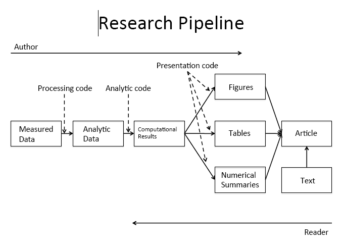

1.1 Reproducible Workflows

PrepareData
- You are your own collaborator 6 months from now. Make sure you will be able to understand what you were doing.
- Investing the time to do things clearly and in a reproducible manner will make your future self happy.
- Comment your code with explanations and instructions.
- How did you get from point A to B?
- Why did you recode this variable in this manner?
- This is reason #1 we use the Markdown language through R.

Repro
Figure Credits: Roger Peng
depress <- read.table("data/Depress.txt", sep="\t", header=TRUE)